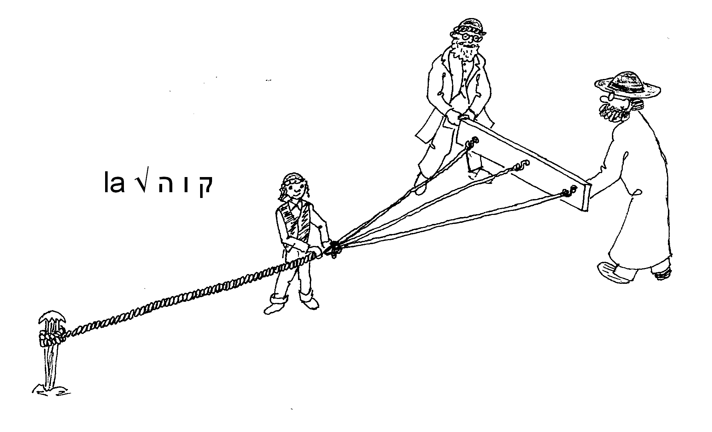

Les racines |
|
En Hébreu, comme en d'autres langues dites "sémitiques",
la quasi-totalité des mots sont dérivés d'une racine.
Le mot, c'est, comme dans toutes les langues, cet "objet" linguistique élémentaire répertorié dans les dictionnaires et utilisé, oralement ou par écrit, par toute personne s'exprimant en cette langue. Un mot hébreu, c'est une racine (consonantique) plus un "schème" (surtout vocalique). Parmi les dictionnaires, j'ai un faible pour le "BDB" car il regroupe les mots par racine ; cela complique beaucoup la tâche quand on cherche un mot mal connu, mais certaines éditions, telle The New BROWN - DRIVER - BRIGGS-GESENIUS Hebrew and English Lexicon (Peabody, Massachusetts, Hendrickson Publishers,1979) ont en annexe une précieuse liste alphabétique de tous les mots avec leur référence dans le BDB, index réalisé par Maurice A. ROBINSON. |
|
|
La racine est une séquence de 2 ou 3 consonnes (très rarement plus) qui est porteuse de sens ; ce n'est nullement un "concept" abstrait, mais tout au contraire
quelque chose de concret
(objet, action, geste, trait descriptif, etc.). Bien présente, même si c'est parfois inconsciemment, à l'esprit de celui qui s'exprime en Hébreu, la racine n'a pourtant de réalité que virtuelle : à part dans les traités de grammaire et les dictionnaires d'hébreu biblique, aucune racine ne s'écrit nulle part, ni à fortiori ne se prononce, puisqu'elle ne contient aucune voyelle.
C'est pourtant la racine des mots hébraïques qui est leur principale pour voyeuse de sens. Le schème, c'est une séquence essentiellement de type vocalique (éventuellement avec ajout de suffixes ou de préfixes) qui, combinée avec les consonnes de la racine, fait ainsi naître un mot avec un (ou des) sens propre(s) à ce mot. |
 |
|
[cf. Le petit cours "Éléments de base pour une grammaire de l'hébreu biblique", chap. 2, § 21, p. 33]. |
|
|
Pour en savoir plus :
|
|